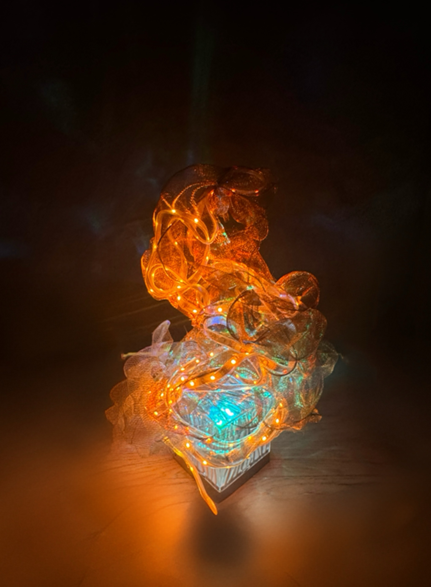
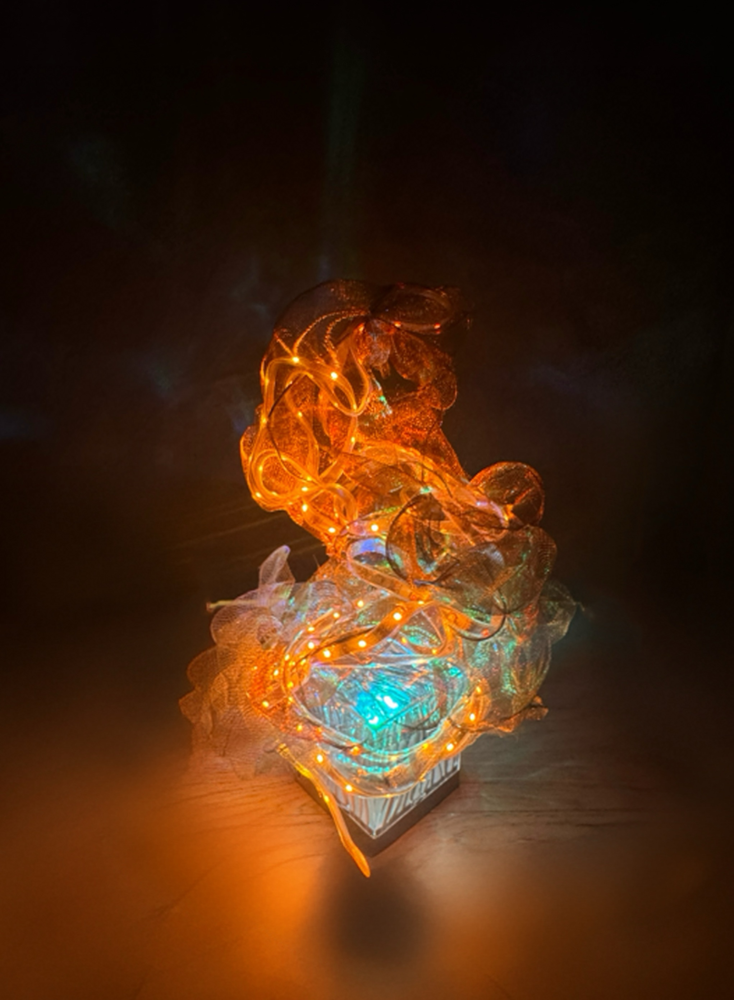

Echo Maze — Research Process
Back to Echo MazeThe initial inspiration stemmed from Lacan’s mirror stage and Sherry Turkle’s notion of relational artifacts. Both suggest that technology doesn’t just reflect identity—it reconstructs it. In Echo Maze, mirrors stand for the algorithmic self, endlessly echoing yet never truly knowing.
Design Process
The installation is built from reflective acrylic walls, DMX-controlled RGB lasers, and LED light strips that pulse between orange (emotion) and teal (reason). Hand gestures captured by camera input in TouchDesigner manipulate fragmented facial images projected within the maze, creating a visual feedback loop between audience and algorithm.
Media Experiments
Media Experiment I: explored facial recognition datasets and distortion mapping to test how “AI empathy” fails when faces blur into data.
Media Experiment II: developed hand-tracking controls that simulate scrolling motions—translating habitual gestures into visual disintegration.

 
